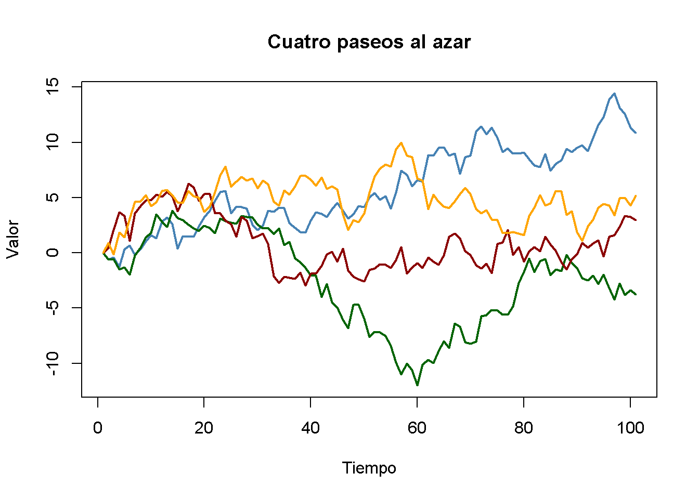
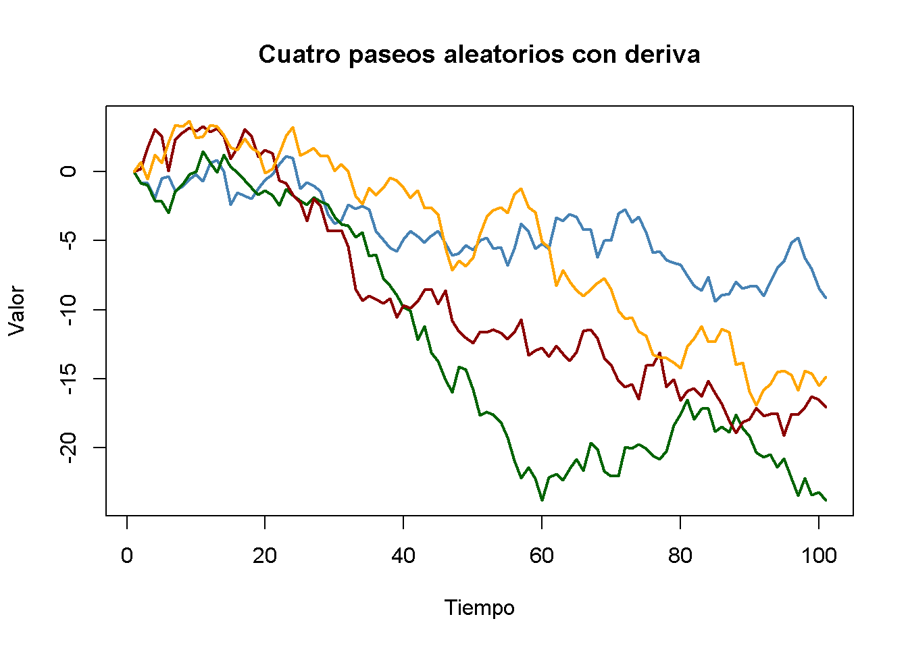
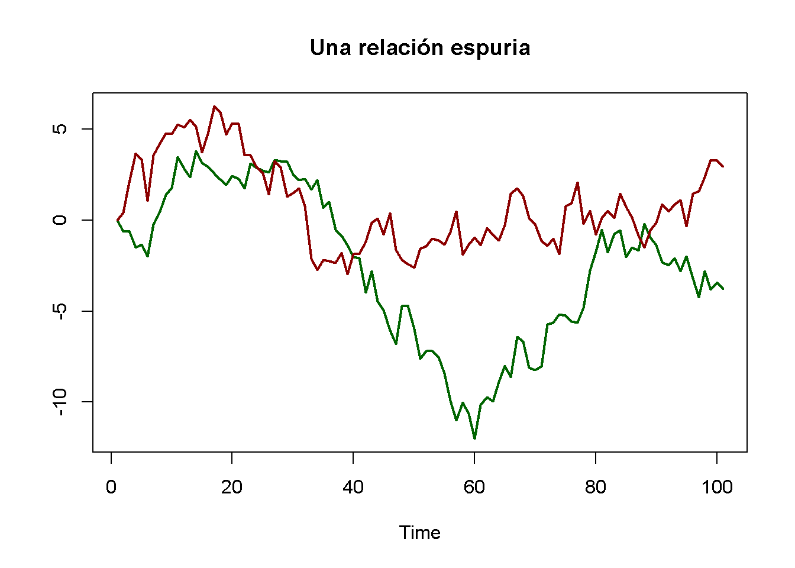
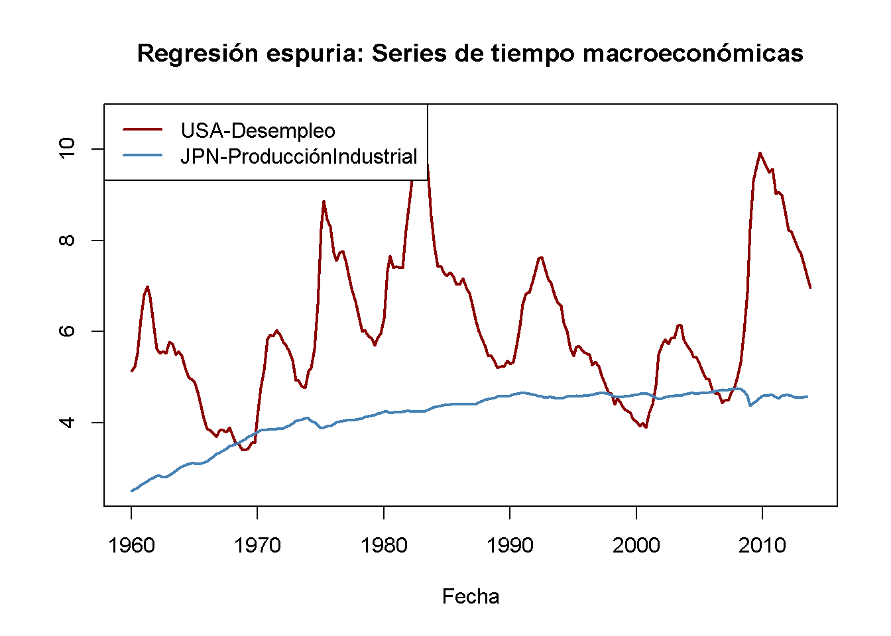
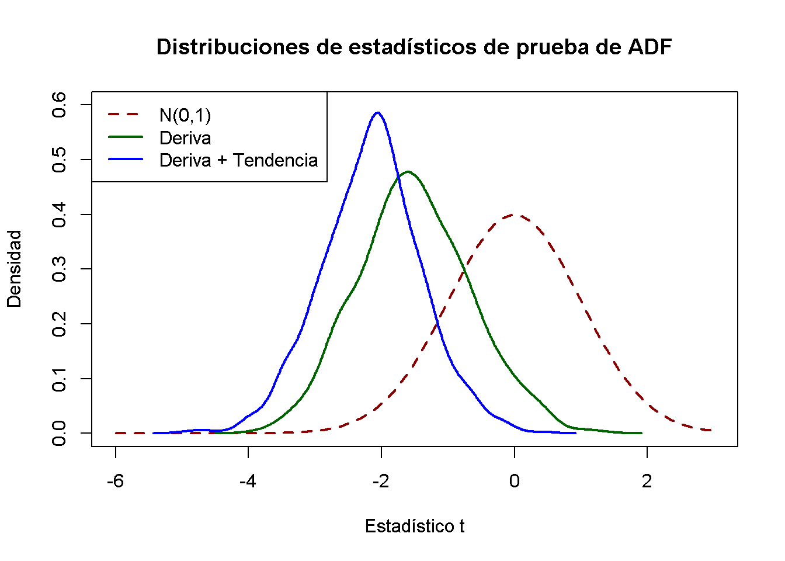

15.7 No estacionariedad I: Tendencias
Si una serie no es estacionaria, las pruebas de hipótesis convencionales, los intervalos de confianza y los pronósticos pueden ser muy engañosos. El supuesto de estacionariedad se viola si una serie presenta tendencias o rupturas y las complicaciones resultantes en un análisis econométrico dependen del tipo específico de no estacionariedad. Esta sección se centra en las series de tiempo que muestran tendencias.
Se dice que una serie muestra una tendencia si tiene un movimiento persistente a largo plazo. Se distingue entre tendencias deterministas y estocásticas.
Una tendencia es determinista si es una función del tiempo no aleatoria.
Se dice que una tendencia es estocástica si es una función aleatoria del tiempo.
Las cifras que se han elaborado en el capítulo 15.2 revelan que muchas series de tiempo económicas muestran un comportamiento de tendencia que probablemente se modele mejor mediante tendencias estocásticas. Por eso el curso se centra en el tratamiento de las tendencias estocásticas.
El modelo de caminata aleatoria de una tendencia
La forma más sencilla de modelar una serie de tiempo \(Y_t\) que tiene una tendencia estocástica es el paseo aleatorio (random walk):
\[\begin{align} Y_t = Y_{t-1} + u_t, \tag{15.6} \end{align}\]
donde los \(u_t\) son errores i.i.d. con \(E(u_t\vert Y_{t-1}, Y_{t-2}, \dots) = 0\). Se debe tener en cuenta que:
\[\begin{align*} E(Y_t\vert Y_{t-1}, Y_{t-2}\dots) =& \, E(Y_{t-1}\vert Y_{t-1}, Y_{t-2}\dots) + E(u_t\vert Y_{t-1}, Y_{t-2}\dots) \\ =& \, Y_{t-1} \end{align*}\]
por lo que el mejor pronóstico para \(Y_t\) es la observación de ayer \(Y_{t-1}\). Por tanto, la diferencia entre \(Y_t\) y \(Y_{t-1}\) es impredecible. La ruta seguida por \(Y_t\) consta de pasos aleatorios \(u_t\), por lo que se denomina caminata aleatoria.
Suponga que \(Y_0\), el valor inicial de la caminata aleatoria, es \(0\). Otra forma de escribir (15.6) es:
\[\begin{align*} Y_0 =& \, 0 \\ Y_1 =& \, 0 + u_1 \\ Y_2 =& \, 0 + u_1 + u_2 \\ \vdots & \, \\ Y_t =& \, \sum_{i=1}^t u_i. \end{align*}\]
Por lo tanto se tiene que:
\[\begin{align*} Var(Y_t) =& \, Var(u_1 + u_2 + \dots + u_t) \\ =& \, t \sigma_u^2. \end{align*}\]
Por lo tanto, la varianza de una caminata aleatoria depende de \(t\), lo que viola el supuesto presentado en el Concepto clave 14.5: Una caminata aleatoria no es estacionaria.
Obviamente, (15.6) es un caso especial de un modelo AR(\(1\)) donde \(\beta_1 = 1\). Se puede demostrar que una serie de tiempo que sigue un modelo AR(\(1\)) es estacionaria si \(\lvert\beta_1\rvert < 1\). En un modelo AR(\(p\)) general, la estacionariedad está vinculada a las raíces del polinomio \[1-\beta_1 z - \beta_2 z^2 - \beta_3 z^3 - \dots - \beta_p z^p.\] Si todas las raíces son mayores que \(1\) en valor absoluto, la serie AR(\(p\)) es estacionaria. Si al menos una raíz es igual a \(1\), se dice que el AR(\(p\)) tiene una raíz unitaria y, por lo tanto, tiene una tendencia estocástica.
Es sencillo simular paseos aleatorios en R usando arima.sim(). La función matplot() es conveniente para gráficos simples de las columnas de una matriz.
# simular y graficar paseos aleatorios a partir de 0
set.seed(1)
RWs <- ts(replicate(n = 4,
arima.sim(model = list(order = c(0, 1 ,0)), n = 100)))
matplot(RWs,
type = "l",
col = c("steelblue", "darkgreen", "darkred", "orange"),
lty = 1,
lwd = 2,
main = "Cuatro paseos al azar",
xlab = "Tiempo",
ylab = "Valor")
Agregar una constante a (15.6) produce
\[\begin{align} Y_t = \beta_0 + Y_{t-1} + u_t \tag{15.7}, \end{align}\]
un modelo de paseo aleatorio con deriva (random walk model with drift) permite modelar si la tendencia de una serie se mueve hacia arriba o hacia abajo. Si \(\beta_0\) es positivo, la serie se desplaza hacia arriba y sigue una tendencia a la baja si \(\beta_0\) es negativo.
# simular y graficar paseos aleatorios con deriva
set.seed(1)
RWsd <- ts(replicate(n = 4,
arima.sim(model = list(order = c(0, 1, 0)),
n = 100,
mean = -0.2)))
matplot(RWsd,
type = "l",
col = c("steelblue", "darkgreen", "darkred", "orange"),
lty = 1,
lwd = 2,
main = "Cuatro paseos aleatorios con deriva",
xlab = "Tiempo",
ylab = "Valor")
Problemas causados por tendencias estocásticas
La estimación por MCO de los coeficientes en regresores que tienen una tendencia estocástica es problemática porque la distribución del estimador y su estadístico \(t\) no es normal, incluso asintóticamente. Esto tiene varias consecuencias:
Sesgo a la baja de los coeficientes autorregresivos:
Si \(Y_t\) es una caminata aleatoria, \(\beta_1\) puede estimarse consistentemente por MCO, pero el estimador está sesgado hacia cero. Este sesgo es aproximadamente \(E(\widehat{\beta}_1) \approx 1 - 5.3/T\) que es sustancial para los tamaños de muestra que se encuentran típicamente en macroeconomía. Este sesgo de estimación hace que los pronósticos de \(Y_t\) funcionen peor que un modelo de caminata aleatoria pura.
Estadísticos \(t\) no distribuidos normalmente:
La distribución no normal del coeficiente estimado de un regresor estocástico se traduce en una distribución no normal de su estadístico \(t\), de modo que los valores críticos normales no son válidos y, por lo tanto, los intervalos de confianza habituales y las pruebas de hipótesis también son inválidos, y la verdadera distribución del estadístico \(t\) no se puede determinar fácilmente.
Regresión espuria:
Cuando dos series de tiempo con tendencia estocástica retroceden entre sí, la relación estimada puede parecer muy significativa utilizando valores críticos normales convencionales, aunque las series no están relacionadas. Esto es lo que los econometristas llaman una relación espuria.
Como ejemplo de regresión espuria, considere nuevamente los paseos aleatorios verde y rojo que se han simulado anteriormente. Se sabe que no existe relación entre ambas series: Se generaron independientemente una de la otra.
# graficar relación espuria
matplot(RWs[, c(2, 3)],
lty = 1,
lwd = 2,
type = "l",
col = c("darkgreen", "darkred"),
xlab = "Time",
ylab = "",
main = "Una relación espuria") 
Imagina que no tiene esta información y en su lugar conjetura que la serie verde es útil para predecir la serie roja y así termina estimando el modelo ADL(\(0\), \(1\))
\[\begin{align*} Red_t = \beta_0 + \beta_1 Green_{t-1} + u_t. \end{align*}\]
# estimar modelo AR espurio
summary(dynlm(RWs[, 2] ~ L(RWs[, 3])))$coefficients
#> Estimate Std. Error t value Pr(>|t|)
#> (Intercept) -3.459488 0.3635104 -9.516889 1.354156e-15
#> L(RWs[, 3]) 1.047195 0.1450874 7.217687 1.135828e-10El resultado es obviamente falso: El coeficiente en \(Green_{t-1}\) se estima en aproximadamente \(1\) y el valor \(p\) de \(1.14 \cdot 10^{-10}\) de la prueba \(t\) correspondiente indica que el coeficiente es muy significativo mientras que su valor real es de hecho cero.
Como ejemplo empírico, considere la tasa de desempleo de Estados Unidos y la producción industrial japonesa. Ambas series muestran un comportamiento de tendencia ascendente desde mediados de la década de 1960 hasta principios de la de 1980.
# graficar la tasa de desempleo de EE. UU. y la producción industrial japonesa
plot(merge(as.zoo(USUnemp), as.zoo(JPIndProd)),
plot.type = "single",
col = c("darkred", "steelblue"),
lwd = 2,
xlab = "Fecha",
ylab = "",
main = "Regresión espuria: Series de tiempo macroeconómicas")
# agrega una leyenda
legend("topleft",
legend = c("USA-Desempleo", "JPN-ProducciónIndustrial"),
col = c("darkred", "steelblue"),
lwd = c(2, 2))
# estimar la regresión utilizando datos de 1962 a 1985
SR_Unemp1 <- dynlm(ts(USUnemp["1962::1985"]) ~ ts(JPIndProd["1962::1985"]))
coeftest(SR_Unemp1, vcov = sandwich)
#>
#> t test of coefficients:
#>
#> Estimate Std. Error t value Pr(>|t|)
#> (Intercept) -2.37452 1.12041 -2.1193 0.0367 *
#> ts(JPIndProd["1962::1985"]) 2.22057 0.29233 7.5961 2.227e-11 ***
#> ---
#> Signif. codes: 0 '***' 0.001 '**' 0.01 '*' 0.05 '.' 0.1 ' ' 1Una regresión simple de la tasa de desempleo de EE. UU. sobre la producción industrial japonesa utilizando datos de los rendimientos entre 1962 a 1985
\[\begin{align} \widehat{U.S. UR}_t = -\underset{(1.12)}{2.37} + \underset{(0.29)}{2.22} \log(JapaneseIP_t). \tag{15.8} \end{align}\]
Esta parece ser una relación significativa: La estadística \(t\) del coeficiente en \(\log(JapaneseIP_t)\) es mayor que 7.
# estimar la regresión usando datos de 1986 a 2012
SR_Unemp2 <- dynlm(ts(USUnemp["1986::2012"]) ~ ts(JPIndProd["1986::2012"]))
coeftest(SR_Unemp2, vcov = sandwich)
#>
#> t test of coefficients:
#>
#> Estimate Std. Error t value Pr(>|t|)
#> (Intercept) 41.7763 5.4066 7.7270 6.596e-12 ***
#> ts(JPIndProd["1986::2012"]) -7.7771 1.1714 -6.6391 1.386e-09 ***
#> ---
#> Signif. codes: 0 '***' 0.001 '**' 0.01 '*' 0.05 '.' 0.1 ' ' 1Al estimar el mismo modelo, esta vez con datos de 1986 a 2012, se obtiene
\[\begin{align} \widehat{U.S. UR}_t = \underset{(5.41)}{41.78} -\underset{(1.17)}{7.78} \log(JapaneseIP)_t \tag{15.9} \end{align}\]
que sorprendentemente es bastante diferente. (15.8) indica una relación positiva moderada, en contraste con el gran coeficiente negativo en (15.9). Este fenómeno se puede atribuir a las tendencias estocásticas de la serie: Dado que no existe un razonamiento económico que relacione ambas tendencias, ambas regresiones pueden ser espurias.
Prueba para una raíz unitaria AR
Dickey and Fuller (1979) han propuesto una prueba formal para una tendencia estocástica que, por lo tanto, se denomina prueba de Dickey-Fuller. Como se mencionó anteriormente, una serie de tiempo que sigue un modelo AR(\(1\)) con \(\beta_1 = 1\) tiene una tendencia estocástica. Por tanto, el problema de las pruebas es:
\[\begin{align*} H_0: \beta_1 = 1 \ \ \ \text{vs.} \ \ \ H_1: \lvert\beta_1\rvert < 1. \end{align*}\]
La hipótesis nula es que el modelo AR(\(1\)) tiene una raíz unitaria y la hipótesis alternativa es que es estacionario. A menudo, uno reescribe el modelo AR(\(1\)) restando \(Y_{t-1}\) en ambos lados:
\[\begin{align} Y_t = \beta_0 + \beta_1 Y_{t-1} + u_t \ \ \Leftrightarrow \ \ \Delta Y_t = \beta_0 + \delta Y_{t-1} + u_t \tag{15.10} \end{align}\]
donde \(\delta = \beta_1 - 1\). El problema de la prueba se convierte en
\[\begin{align*} H_0: \delta = 0 \ \ \ \text{vs.} \ \ \ H_1: \delta < 0 \end{align*}\]
lo cual es conveniente, ya que el estadístico de prueba correspondiente es reportado por muchas funciones relevantes en R.1
La prueba de Dickey-Fuller también se puede aplicar en un modelo AR(\(p\)). La prueba de Dickey-Fuller aumentada (ADF) se resume en el Concepto clave 14.8.
Concepto clave 14.8
La prueba ADF para una raíz unitaria
Considere la regresión
\[\begin{align} \Delta Y_t = \beta_0 + \delta Y_{t-1} + \gamma_1 \Delta_1 Y_{t-1} + \gamma_2 \Delta Y_{t-2} + \dots + \gamma_p \Delta Y_{t-p} + u_t. \tag{15.11} \end{align}\]
La prueba ADF para una raíz unitaria autorregresiva prueba la hipótesis \(H_0: \delta = 0\) (tendencia estocástica) contra la alternativa unilateral \(H_1: \delta < 0\) (estacionariedad) utilizando el valor habitual de MCO, el estadístico \(t\).
Si se supone que \(Y_t\) es estacionario alrededor de una tendencia de tiempo lineal determinista, el regresor \(t\) aumenta el modelo:
\[\begin{align} \Delta Y_t = \beta_0 + at + \delta Y_{t-1} + \gamma_1 \Delta_1 Y_{t-1} + \gamma_2 \Delta Y_{t-2} + \dots + \gamma_p \Delta Y_{t-p} + u_t, \tag{15.12} \end{align}\]
donde nuevamente \(H_0: \delta = 0\) se prueba contra \(H_1: \delta < 0\).
La longitud óptima del retraso \(p\) se puede estimar utilizando criterios de información. En ((15.11)), \(p=0\) (no se usan rezagos de \(\Delta Y_t\) como regresores) corresponde a un AR(\(1\)) simple.
Bajo el valor de la hipótesis nula, el estadístico \(t\) correspondiente a \(H_0: \delta = 0\) no tiene una distribución normal. Los valores críticos solo se pueden obtener de la simulación y difieren para las regresiones (15.11) y (15.12), ya que la distribución del estadístico de prueba ADF es sensible a los componentes deterministas incluidos en la regresión.
Valores críticos para el estadístico ADF
El Concepto clave 14.8 establece que los valores críticos para la prueba ADF en las regresiones (15.11) y (15.12) solo se pueden determinar mediante simulación. La idea del estudio de simulación es simular una gran cantidad de estadísticos de prueba ADF y usarlos para estimar cuantiles de su distribución asintótica. Esta sección muestra cómo se puede hacer esto usando R.
Primero, se debe considerar el siguiente modelo AR(\(1\)) con intercepción:
\[\begin{align*} Y_t =& \, \alpha + z_t, \ \ z_t = \rho z_{t-1} + u_t. \end{align*}\]
Esto se puede escribir como:
\[\begin{align*} Y_t =& \, (1-\rho) \alpha + \rho y_{t-1} + u_t, \end{align*}\]
es decir, \(Y_t\) es un paseo aleatorio sin deriva bajo la hipótesis nula \(\rho = 1\). Se puede demostrar que \(Y_t\) es un proceso estacionario con una media de \(\alpha\) para \(\lvert\rho\rvert<1\).
El procedimiento para simular valores críticos de una prueba de raíz unitaria usando la relación \(t\) de \(\delta\) en (15.10) es el siguiente:
- Simular \(N\) paseos aleatorios con \(n\) observaciones utilizando el proceso de generación de datos:
\[\begin{align*} Y_t =& \, a + z_t, \ \ z_t = \rho z_{t-1} + u_t, \end{align*}\]
\(t=1,\dots,n\) donde \(N\) y \(n\) son números grandes, \(a\) es una constante y \(u\) es un término de error medio cero.
- Para cada caminata aleatoria, se estima la regresión:
\[\begin{align*} \Delta Y_t =& \, \beta_0 + \delta Y_{t-1} + u_t \end{align*}\]
y calcular el estadístico de prueba ADF. Guardar todas los estadísticos de prueba de \(N\).
- Estimar cuantiles de la distribución del estadístico de prueba ADF utilizando los estadísticos de prueba \(N\) obtenidos de la simulación.
Para el caso de deriva y tendencia de tiempo lineal, se reemplaza el proceso de generación de datos por:
\[\begin{align} Y_t =& \, a + b \cdot t + z_t, \ \ z_t = \rho z_{t-1} + u_t \tag{15.13} \end{align}\]
donde \(b \cdot t\) es una tendencia de tiempo lineal. \(Y_t\) en (15.13) es una caminata aleatoria con (sin) deriva si \(b\neq0\) (\(b=0\)) bajo el valor nulo de \(\rho=1\) (¿puede demostrar esto?). Se estima la regresión:
\[\begin{align*} \Delta Y_t =& \, \beta_0 + \alpha \cdot t + \delta Y_{t-1} + u_t. \end{align*}\]
En términos generales, la precisión de los cuantiles estimados depende de dos factores: \(n\), la longitud de la serie subyacente y \(N\), el número de estadísticos de prueba utilizados. Dado que se está interesado en estimar cuantiles de la distribución asintótica (la distribución de Dickey-Fuller) del estadístico de prueba ADF, tanto el uso de muchas observaciones como un gran número de estadísticos de prueba simulados aumentará la precisión de los cuantiles estimados. Se elige \(n = N = 1000\), ya que la carga computacional crece rápidamente con \(n\) y \(N\).
# repeticiones
N <- 1000
# observaciones
n <- 1000
# definir constante, tendencia y rho
drift <- 0.5
trend <- 1:n
rho <- 1
# función que simula un proceso AR(1)
AR1 <- function(rho) {
out <- numeric(n)
for(i in 2:n) {
out[i] <- rho * out[i-1] + rnorm(1)
}
return(out)
}
# simular desde PIB con constante
RWD <- ts(replicate(n = N, drift + AR1(rho)))
# calcular estadísticos de prueba de ADF y almacenarlos en 'ADFD'
ADFD <- numeric(N)
for(i in 1:ncol(RWD)) {
ADFD[i] <- summary(
dynlm(diff(RWD[, i], 1) ~ L(RWD[, i], 1)))$coef[2, 3]
}
# simular desde PIB con constante y tendencia
RWDT <- ts(replicate(n = N, drift + trend + AR1(rho)))
# calcular estadísticos de prueba de ADF y almacenarlos en 'ADFDT'
ADFDT <- numeric(N)
for(i in 1:ncol(RWDT)) {
ADFDT[i] <- summary(
dynlm(diff(RWDT[, i], 1) ~ L(RWDT[, i], 1) + trend(RWDT[, i]))
)$coef[2, 3]
}# estimar cuantiles para la regresión ADF con una deriva
round(quantile(ADFD, c(0.1, 0.05, 0.01)), 2)
#> 10% 5% 1%
#> -2.62 -2.83 -3.39
# estimar cuantiles para regresión ADF con deriva y tendencia
round(quantile(ADFDT, c(0.1, 0.05, 0.01)), 2)
#> 10% 5% 1%
#> -3.11 -3.43 -3.97Los cuantiles estimados están cerca de los valores críticos de muestras grandes del estadístico de prueba ADF.
| Regresores deterministas | 10% | 5% | 1% |
|---|---|---|---|
| Intercepto solo | -2.57 | -2.86 | -3.43 |
| Intercepto y tendencia temporal | -3.12 | -3.41 | -3.96 |
Los resultados muestran que el uso de valores críticos normales estándar es erróneo: El valor crítico del \(5\%\) de la distribución normal estándar es \(-1.64\). Para las distribuciones de Dickey-Fuller, los valores críticos estimados son \(-2.87\) (deriva) y \(-3.43\) (deriva y tendencia lineal en el tiempo). Esto implica que una verdadera hipótesis nula (la serie tiene una tendencia estocástica) se rechazaría con demasiada frecuencia si se usaran valores críticos normales inapropiados.
Se pueden utilizar las estadísticas de prueba simuladas para una comparación gráfica de la densidad normal estándar y (estimaciones de) ambas densidades Dickey-Fuller.
# graficar densidad normal estándar
curve(dnorm(x),
from = -6, to = 3,
ylim = c(0, 0.6),
lty = 2,
ylab = "Densidad",
xlab = "Estadístico t",
main = "Distribuciones de estadísticos de prueba de ADF",
col = "darkred",
lwd = 2)
# gráficos de estimaciones de densidad de ambas distribuciones de Dickey-Fuller
lines(density(ADFD), lwd = 2, col = "darkgreen")
lines(density(ADFDT), lwd = 2, col = "blue")
# add a legend
legend("topleft",
c("N(0,1)", "Deriva", "Deriva + Tendencia"),
col = c("darkred", "darkgreen", "blue"),
lty = c(2, 1, 1),
lwd = 2)
Las desviaciones de la distribución normal estándar son significativas: Ambas distribuciones Dickey-Fuller están sesgadas hacia la izquierda y tienen una cola izquierda más pesada que la distribución normal estándar.
¿Tiene el PIB de EE. UU. una raíz unitaria?
Como ejemplo empírico, se utiliza la prueba ADF para evaluar si existe una tendencia estocástica en el PIB de EE. UU. utilizando la regresión:
\[\begin{align*} \Delta\log(GDP_t) = \beta_0 + \alpha t + \beta_1 \log(GDP_{t-1}) + \beta_2 \Delta \log(GDP_{t-1}) + \beta_3 \Delta \log(GDP_{t-2}) + u_t. \end{align*}\]
# generar series de logaritmos del PIB
LogGDP <- ts(log(GDP["1962::2012"]))
# estimar el modelo
coeftest(
dynlm(diff(LogGDP) ~ trend(LogGDP, scale = F) + L(LogGDP)
+ diff(L(LogGDP)) + diff(L(LogGDP), 2)))
#>
#> t test of coefficients:
#>
#> Estimate Std. Error t value Pr(>|t|)
#> (Intercept) 0.27877045 0.11793233 2.3638 0.019066 *
#> trend(LogGDP, scale = F) 0.00023818 0.00011090 2.1476 0.032970 *
#> L(LogGDP) -0.03332452 0.01441436 -2.3119 0.021822 *
#> diff(L(LogGDP)) 0.08317976 0.11295542 0.7364 0.462371
#> diff(L(LogGDP), 2) 0.18763384 0.07055574 2.6594 0.008476 **
#> ---
#> Signif. codes: 0 '***' 0.001 '**' 0.01 '*' 0.05 '.' 0.1 ' ' 1La estimación produce
\[\begin{align*} \Delta\log(GDP_t) =& \underset{(0.118)}{0.28} + \underset{(0.0001)}{0.0002} t -\underset{(0.014)}{0.033} \log(GDP_{t-1}) \\ & + \underset{(0.113)}{0.083} \Delta \log(GDP_{t-1}) + \underset{(0.071)}{0.188} \Delta \log(GDP_{t-2}) + u_t, \end{align*}\]
por lo que el estadístico de prueba ADF es \(t=-0.033/0.014 = - 2.35\). El valor crítico correspondiente de \(5\%\) de la Tabla 15.2 es \(-3.41\), por lo que no se puede rechazar la hipótesis nula de que \(\log(GDP)\) tiene una tendencia estocástica a favor de la alternativa que es estacionario alrededor de una tendencia de tiempo lineal determinista.
La prueba ADF se puede realizar cómodamente usando ur.df() del paquete urca.
# prueba de raíz unitaria en el PIB usando 'ur.df()' del paquete 'urca'
summary(ur.df(LogGDP,
type = "trend",
lags = 2,
selectlags = "Fixed"))
#>
#> ###############################################
#> # Augmented Dickey-Fuller Test Unit Root Test #
#> ###############################################
#>
#> Test regression trend
#>
#>
#> Call:
#> lm(formula = z.diff ~ z.lag.1 + 1 + tt + z.diff.lag)
#>
#> Residuals:
#> Min 1Q Median 3Q Max
#> -0.025580 -0.004109 0.000321 0.004869 0.032781
#>
#> Coefficients:
#> Estimate Std. Error t value Pr(>|t|)
#> (Intercept) 0.2790086 0.1180427 2.364 0.019076 *
#> z.lag.1 -0.0333245 0.0144144 -2.312 0.021822 *
#> tt 0.0002382 0.0001109 2.148 0.032970 *
#> z.diff.lag1 0.2708136 0.0697696 3.882 0.000142 ***
#> z.diff.lag2 0.1876338 0.0705557 2.659 0.008476 **
#> ---
#> Signif. codes: 0 '***' 0.001 '**' 0.01 '*' 0.05 '.' 0.1 ' ' 1
#>
#> Residual standard error: 0.007704 on 196 degrees of freedom
#> Multiple R-squared: 0.1783, Adjusted R-squared: 0.1616
#> F-statistic: 10.63 on 4 and 196 DF, p-value: 8.076e-08
#>
#>
#> Value of test-statistic is: -2.3119 11.2558 4.267
#>
#> Critical values for test statistics:
#> 1pct 5pct 10pct
#> tau3 -3.99 -3.43 -3.13
#> phi2 6.22 4.75 4.07
#> phi3 8.43 6.49 5.47La primera estadística de prueba en la parte inferior de la salida es la que interesa. La cantidad de estadísticas de prueba informadas depende de la regresión de la prueba. Para type = “trend”, la segunda estadística corresponde a la prueba de que no existe raíz unitaria ni tendencia temporal, mientras que la tercera corresponde a una prueba de la hipótesis de que existe una raíz unitaria, sin tendencia temporal ni término de deriva.
Referencias bibliográficas
El estadístico \(t\) de la prueba de Dickey-Fuller se calcula usando solamente errores estándar de homocedasticidad, ya que bajo la hipótesis nula, el estadístico \(t\) es robusto a la heterocedasticidad condicional.↩︎